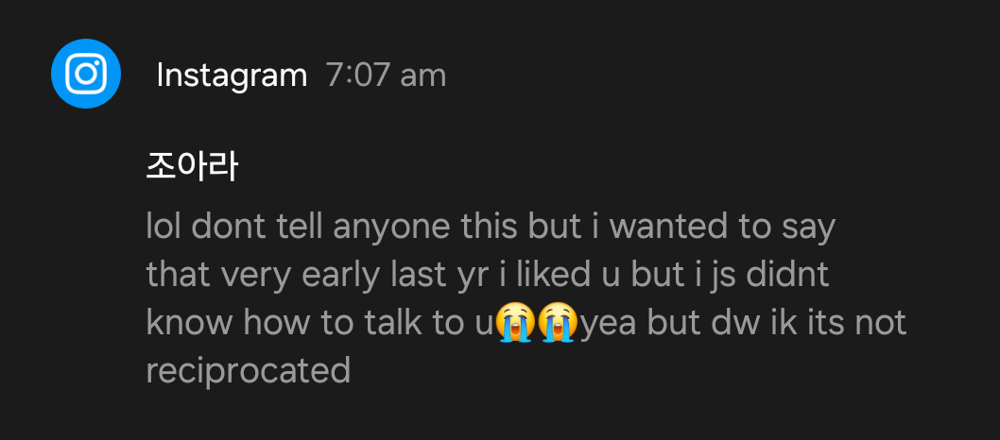

Those three words,
Enough to plant a smile
On my face so willing.
Yet strike a nerve so deep,
And craft a thought instilling:
A message to undermine the world
The exams and plans,
Deadlines that blossom too fast,
Social constructs that rule the world,
They all fade into pretense.
Bearing a simulated seperation,
And a will to violate it.
Invent teleportation,
Intercept dreams.
A message designed to love
Still deviates to frustration.
Three simple words
Expose a new kind of pain.
The gut-wrenching heartache
That just keeps on pounding.
The goodnights and good mornings,
Pushing me to crave even more
A day that never seems to come.
The asymptote of time slows
As I realise the finite nature
Of my patience.
But your smile will come again
And light up the cave I've dug myself into.
And your voice will come again
Bringing serenity to a maddened world.
And your touch will come again
I already know I will never want to let go.
I miss you too
I want to let you know how grateful I am that you're a part of my life now. I still remember that morning so clearly when I saw a message from you. In the days leading up to then I had noticed that you'd been liking all of the stuff I was posting on Insta, although I still had no idea why you were liking them. I felt such strong emotions to wake up to that message:
Like me, me?????? It was a mix of like 'oh my gosh someone likes me' and 'someone likes me?'. I saw it right as I woke up around 7am and I just thought about how to reply for the entire morning. I wish I could remember all the thoughts that were going through my head then but nothing has stuck in my memory.
I'm so glad that its worked out for us, you're just so perfect and special to me now it's wonderful. I thought that you could tell what my intentions were then, like I was trying to show that I was interested in you. And immediately I realised how easy and enjoyable it is to talk to you, and it didn't take long at all for me to develop feelings for you.
And then there was the night where I was playing BeamNG with my friend Olie, and I was talking to him about how I was talking to you and everything that had gone on so far. I remember telling him that I had feelings for you and wanted to tell you but were too scared, and he was so convincing in telling me to bring it up. That was probably one of the moments in my life where I've felt the most scared, like I had so much validation and strong feelings resting on what I was saying.
But once I said that and we confirmed that we we're dating life has just been amazing with you. I love you so much more than I ever thought I could, like who would have known? I could spend so long talking about what I love about you:
Did I mention that I love you, like so indescribably much, I want you know that I am thinking of you every single moment of every single day. I also wanna say that I was soooo happy after our first date, I just enjoy every single moment I spend with you. And I cannot wait until our second date because I already know that it is going to be another one of the best days of my life.
So finally, I just want to say that I am so grateful for you coming into my life, I love you with all of my existence in this world, and I am so proud of you for being such an awesome person who makes the world a better place. No matter if you're having a mental breakdown, or getting bad grades, or literally any other occcurance, I will always love you - today, tommorow, forever.
Might I sound crazy?
Maybe I sound mad?
Have I said it enough already?
Or might she even be glad?
Fortune conceals its double edge
Gifting me the most beautiful angel
Down from the heavens abovs
But still fortune deceives us
To deprive our expression of love
To public gatherings at school
The messages and calls online,
Still nothing can satisfy
The way I need spend my time
My dreams stand before me
Squeezing her whole body so tight
Leaning in for a first kiss
To leave me in pure delight
But for now, in angst,
I wait
Waiting, for a while at least,
For that very special day
Dear Angela,
Its a little sad I can't see you on your actual 18th birthday but at least I'm here today :P
Despite the horrors of the incoming trials I hope you enjoy your birthday nonetheless.
Happy birthday!!! And congrats on entering adulthood.
I hope you know how grateful I am to know such an amazing person. Never forget how amazing you are, and remember that I will always be proud of you for everything you are.
With lots of love, Oliver
Hey, so I don't know if this is really gonna say anything but I felt like yapping lol.
I really can't say enough how grateful I am for your presence in my life, the joy and love you bring just makes my every day. And I'm still so surprised that I would be the lucky guy to get to enjoy all of you, OMG I LOVE YOU SOOOO MUCH.
And I've just been reflecting on our relationship a little bit recently, and everything just makes me so giddy and happy. To the point where it actually feels unreal. It all started with you having a crush on me, and like even just that makes me so happy. It really provides me with some much needed validation in my life and my mind. And then you built up the courage to talk to me, and wow am I glad that I finally downloaded Instagram. I remember seeing that message and my heart just went beating so fast, and it all felt so surreal. BUT MAN DID I THROW SO HARD. I really just wanted to start by being as honest as I could, which I realise now was really brutal. Because I didn't want to get into a relationship unless it was built on trust and good communication. And since then soooo much has happened:
And soon it will be our three month anniversary, on the last day of classes for year 12. Kinda fitting, right? Haha I'm looking forward to seeing you in maths that day, and I know you're gonna make that day so much more special for me.
And then we can experience the ends of it all together, through all the time in grad week. WHERE I AM PRAYING THAT I CAN SEE YOU IN PRIVATE. And then we have the HSC, the big end to it all.
And afterwards, freedom. We can finally spend more time together after HSC, and probably finally tell your parents about me, about us.
Us, it's such an inclusive word that means something completely different to me than it did 3 months ago. It used to be a word that described whatever group I was a part of in that context, but now it means us, you and I. Angela and Oliver, or kimcholiver as my friends still say.
And this all leads me into one big collective sigh. A complex, multifaceted sigh. A sigh of relief, that I have someone I can go to for all of my problems. A sigh of hope and comfort for the world that I feel so loved in. And thank you again, again and again and again for making me feel so loved. And a sigh that comes with loving you so much, and as all the cringey Instagram reels put it.
I am so sad that I miss you so much right now, but even more glad that I have someone worth to miss this much.
Or something along those lines.
I love you, and every single day I find another reason to love you even more than yesterday.